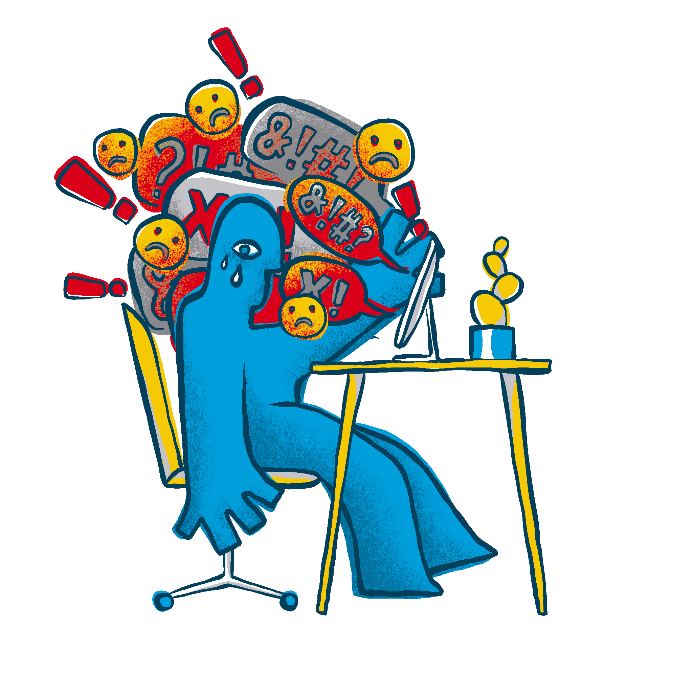

Portfólio
Confira alguns dos meus projetos


Estudo do ENADE anos 2017, 2018 e 2019
Neste projeto, iremos utilizar a linguagem Python aliada ao SQLite para construir um Date Warehouse para os Micrododados do ENADE dos anos de 2017, 2018 e 2019 e realizar uma análise de dados seguida de um modelo de predição.
Data Warehouse, Data Analytics & Machine Learning


Mago Sossegado - Protótipo
Protótipo da aplicação com foco em ajudar profissionais de TI a viverem menos ansiosos desenvolvida no estudo de caso de UX Design realizado por um time composto por Eduardo Leão, José Victor, Letícia Tavares e Luiz Eduardo.
UX Design, Prototipação
Data Science Project
